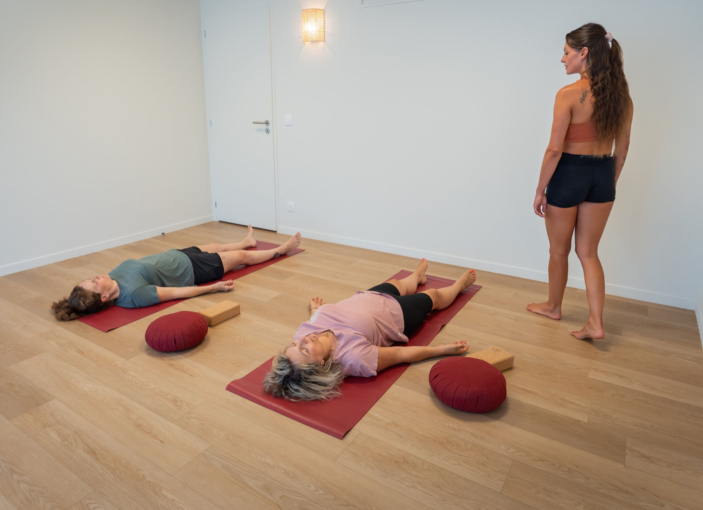

Atelier · La Bulle, Argonay
Une matinée pour libérer la charge mentale, en douceur, par le yoga et l'EFT — co-animée avec Célia.
Les infos pratiques
🗓️ Samedi 26 septembre 2026, de 9h30 à 13h
📍 La Bulle – centre des pratiques, 15 Rte des Vernes, 74370 Argonay-Pringy
👩 Un atelier pensé pour les femmes
👥 8 personnes maximum · 💛 60 €
🤝 Co-animé avec Célia
(@celia_zephyrzen), praticienne EFT
La rentrée fait souvent remonter une charge mentale bien remplie : listes qui s'allongent, tensions, pensées qui tournent. Le temps d'une matinée, on s'offre un espace pour déposer, se recentrer et repartir plus léger·ère — avec des outils concrets à emporter au quotidien.
Tu te reconnais ?
Cette sensation d'être surmenée en fin de journée touche énormément de femmes aujourd'hui. Et si, en réalité, le problème ce n'était pas toi… mais un quotidien qui nous pousse à enchaîner les tâches les unes après les autres — parfois plusieurs en même temps —, à agir vite, l'esprit déjà tourné vers la suivante, sans jamais vraiment nous arrêter ?
Le travail qui déborde, les mails à répondre, les dossiers qui s'empilent, les enfants à déposer à l'école puis à emmener aux activités, le dîner à préparer, les tâches ménagères… et la liste continue. Dans tout ça, on ne prend pas une seconde pour soi : pour regarder à l'intérieur, respirer, se demander simplement comment on se sent. Et le souffle, lui, suit le mouvement : il se coupe, se saccade.
Alors, au fil des heures, la charge s'installe. Vient l'épuisement, les nerfs à vif, l'impression d'être à bout de forces — et souvent, celle de ne pas être comprise par ses proches.

“Tu n'es pas le problème.
Ce que tu ressens n'est pas une fatalité, mais un appel à regarder à l'intérieur.
Si on t'a déjà dit que tu étais « hystérique », de mauvaise humeur ou désagréable ; si tu culpabilises à l'idée de poser tes tâches pour prendre soin de toi ; ou si tu gardes tout à l'intérieur avec l'envie d'exploser… sache que tu n'es pas seule.
Et si on faisait autrement ?
Bonne nouvelle : il existe des outils concrets pour t'aider à te réveiller plus légère, énergisée, avec l'envie de démarrer ta journée. C'est ce que nous avons à cœur de te transmettre avec Célia, à travers l'EFT et le yoga. Rien de compliqué : juste des pratiques accessibles. Tu mérites de t'offrir ce temps et cet espace. 🤍
Côté yoga, c'est une pratique douce et accessible, qui ne demande aucune expérience. On est très loin de l'idée de performance ou de gymnastique : c'est un véritable retour à soi. Je te le partage d'autant plus sincèrement que, dans ma propre vie, je suis sujette au surmenage lié à la charge mentale — et le yoga est mon meilleur allié au quotidien pour dépasser cet état et éviter qu'il ne s'installe. Ensemble, nous explorerons quelques postures, mais aussi des respirations et des sons qui allègent l'esprit et apaisent le mental.
Au programme
Un temps d'accueil et d'écoute, en confiance, pour déposer ce qui pèse et poser ses intentions.
La technique de libération émotionnelle (tapping) pour apaiser le mental et relâcher les tensions intérieures.
Une pratique douce de viniyoga pour dénouer le corps, ralentir le souffle et revenir à soi.
Un moment convivial autour d'une collation, et des outils concrets à emporter pour alléger le quotidien.
8 places seulement — écris-moi pour réserver la tienne (60 €).